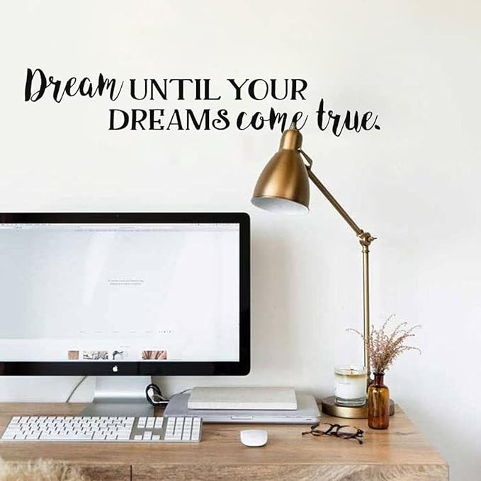
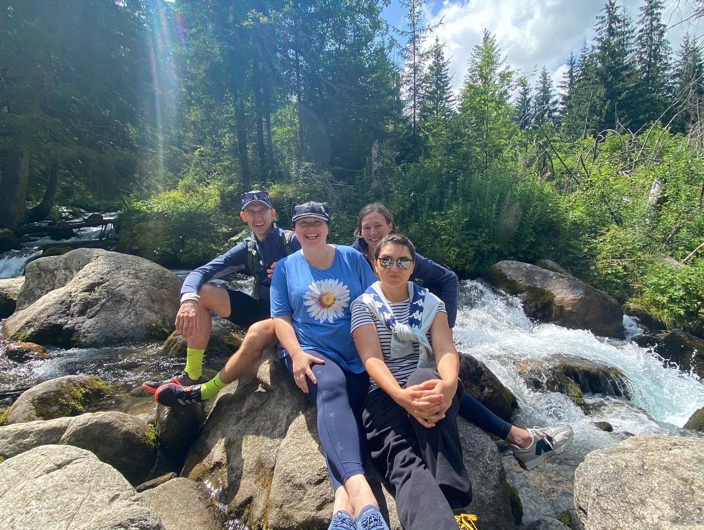

About

Back in school, I had a dream to become a programmer. I managed to get into a Computer Science program, but unfortunately, I struggled immensely with programming. I couldn't understand the instructors, found it hard to concentrate for extended periods, and honestly, my personal life seemed to intrigue me more than my dream. So, after barely graduating, I ventured into a completely different field. I began as a recruiter and later transitioned into HR. I was successful and built an impressive career, leaving behind my initial dream.
The next chapter in my journey was joining an IT company as an HR manager. Here, I was reminded of my aspiration to code. I took it upon myself to learn, and although the idea of a career switch was intimidating, I decided to pivot slightly within the same IT domain: I became a QA Engineer. Once again, I built my career from the ground up, advancing to a QA Lead position. However, working closely with developers, I never truly forgot what I truly desired.
Now, after taking an almost six-year break to relocate to a new country and fully immerse myself in the role of a full-time mother, I'm setting out to turn that dream into a concrete objective and realize it. On this page, you can discover more about me, my expertise, knowledge, passions, and interests.
Experience
QA Lead Engineer/Team Lead/Business analyst
A-MTOSS, Ltd., Project Mein A1 business
06/2019 - 08/2020
PROJECT INFORMATION: Mein A1 Business is a web portal designed for enterprise customers of Austria Telecom. It provides a centralized platform for accessing information from different services in one place. The portal is designed to simplify and streamline communication, enabling customers to easily manage their services, view invoices, and access support. With Mein A1 Business, Austria Telecom customers can access a range of tools and resources that help them better understand and manage their telecom services.
ACHIEVEMENTS:
- Successfully established and led a QA team from scratch, resulting in a significant improvement in software quality and reduced defect rates.
- Implemented quality assurance policies and procedures that led to more efficient and effective testing and improved software quality.
- Developed and implemented a defect tracking and resolution process that resulted in a faster and more effective resolution of defects, reducing the time-to-market of releases.
- Successfully provided guidance and mentorship to junior QA team members, resulting in their professional growth and improved team performance.
- Collaborated effectively with the development team to ensure timely and effective defect resolution, resulting in reduced defect rates and improved software quality.
- Implemented process improvements that significantly increased the efficiency and effectiveness of the QA team, resulting in reduced testing time and improved software quality.
- Conducted root cause analysis on defects and implemented corrective actions that prevented future occurrences.
- Successfully conducted risk assessments and developed mitigation strategies that minimized project risks, resulting in successful project outcomes.
QA Lead Engineer/Business analyst
A-MTOSS, Ltd. Project PartnerWeb
02/2019 - 04/2020
PROJECT INFORMATION: PartnerWeb is a web application with service-oriented architecture. It is spread across several distinct server groups to ensure high availability and scalability. PartnerWeb is used by A1 partners, including individuals, small companies, retail chains, and large enterprises that sell A1 products to customers. They use PartnerWeb in A1 shops to capture customer orders and requests. The application is designed to streamline the ordering process and ensure efficient customer service. PartnerWeb has a complex structure and multiple integrations with various systems.
ACHIEVEMENTS:
- Successfully coordinated the testing of software releases to ensure timely launches.
- Ensured the product met user expectations and specifications by conducting effective feature testing and analyzing requirements.
- Configured test environments to ensure accurate and effective testing, resulting in more reliable testing efforts and higher quality product releases.
- Identified critical issues and areas for improvement in business functionality through business analysis, resulting in more efficient and effective testing efforts.
- As QA Lead, I took the lead in initiating, organizing, and producing project documentation.
QA Lead Engineer
EPAM Systems Ukraine, Ltd. Project CCC
06/2018-02/2019
PROJECT INFORMATION: The project is a enterprise management system for the company that provides content management, licensing, and copyright compliance services to a diverse range of customers globally. Their innovative solutions help organizations manage their content, obtain permissions, and comply with copyright laws. Our responsibilities included designing and implementing carts, orders, and invoicing systems, payment processing, and various integration services.
ACHIEVEMENTS:
- Successfully managed to release 6 releases with critical functionality.
- Managed all the project’s tasks on time.
- Successfully organized regressions/smoke test sets from scratch.
- Developed a skilled QA team.
Skills
Projects
Connect
Hobby
-
Our dancing team
-

Hiking
-
Ice skating